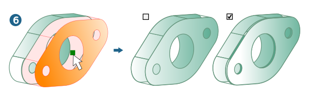
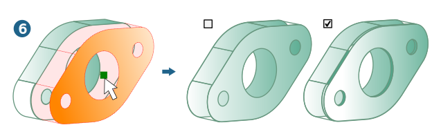

Offset
Create faces with an offset from existing faces. → |
Select
Faces: Select one or more faces  from which the offsets should be derived. The number of selected entities is displayed.
from which the offsets should be derived. The number of selected entities is displayed.
Offset: Enter the distance  of the offset from the original face. An offset of zero is permitted.
of the offset from the original face. An offset of zero is permitted.


Manage direction
Invert can be used to reverse the offset direction of individual faces when multiple faces exist. Click the face with the left mouse button. Use Invert all to invert all the offset directions.
View: The offset faces are set in the direction of the current view on the selected faces. Use the view commands to change the direction of view on the model in order to trigger a change of offset direction.
Transitions
None: Transitions between multiple offsets are not created  . The faces are not extended.
. The faces are not extended.
Sharp: Transitions between multiple offsets are created with sharp edges  .
.
Rounded: Creates rounded transitions between multiple offsets  .
.

When → is used for faces, the offset is calculated on the side of the selected entities from which the model is viewed. The direction of the normal to faces is not evaluated. This behavior has no influence on solids.
Multiple offset
Enter the number of Instances.
More options
Create faces with an offset from existing faces or faces in solids. If the Keep original option  has been selected, the base entities are retained. This results in additional faces being created for a solid. Otherwise, the face in the solid will be modified and the solid adjusted. The offset must be greater than the maximum error of the vertices.
has been selected, the base entities are retained. This results in additional faces being created for a solid. Otherwise, the face in the solid will be modified and the solid adjusted. The offset must be greater than the maximum error of the vertices.
- Solids
For direct modeling, use the Side faces option
 to determine whether to fill an existing gap with new faces. Otherwise, the existing faces will be adjusted.
to determine whether to fill an existing gap with new faces. Otherwise, the existing faces will be adjusted.
Use the Check radius of curvature option to determine whether the offset is compatible with the curvature radii. If not, a warning is issued. Unable to create a self-cut  . Without checking, self-intersecting offset faces are permitted
. Without checking, self-intersecting offset faces are permitted  .
.